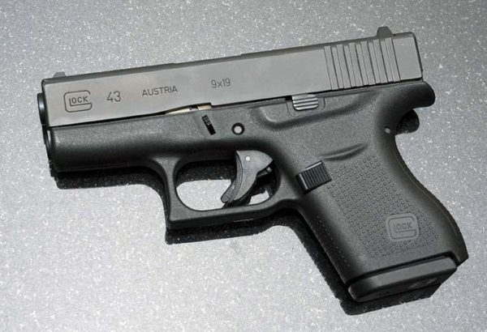
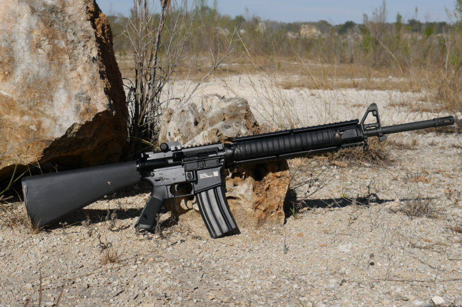

Patria k najdostupnejším a najlacnejším airsoftovým zbraniam. Z toho však vyplýva aj relatívne nižšia precíznosť spracovania, menej funkčných dielov, ale i menšia razancia a dostrel. Veľkou výhodou manuálnych zbraní je ich nenáročnosť na údržbu a takmer nulové náklady spojené s používaním (munícia). U manuálnych zbraní je nutné pred každým výstrelom zbraň natiahnuť (natiahnuť pružinu poháňajúcu vzduchový piest). K dispozícii sú krátke aj dlhé zbrane.
Ich cena sa pohybuje okolo 7 – 33 € (krátke), 33 – 500€ (dlhé/ sniperky). Využiteľný dostrel týchto zbraní je okolo 15 m, reálne až 20 – 90 m, ale na túto vzdialenosť majú zbrane už príliš výraznú balistickú krivku. Energia strely je v priemere 0,3 – 0,4 J.
Kvalita spracovania i spoľahlivosť závisí od výrobcu, v tejto oblasti sú najčastejšími zástupcami firmy Tokyo Marui – TM a Unicorn Hobby Corporation – UHC. Najobľúbenejšími modelmi sú pištole Glock 17, Heckler & Koch USP, Beretta 92F, CZ 75 a Desert Eagle, z dlhých manuálov sú to Heckler & Koch MP5 A3 a slávny Colt M16. Medzi ďalšie obľúbené manuálne zbrane patrí aj Taurus 24/7, ktorý je cenený hlavne pre vynikajúci pomer cena/kvalita/spracovanie. Manuály stále patria k najrozšírenejším airsoftovým zbraniam aj na Slovensku a používajú ich hlavne začiatočníci; pokročilí ako záložné/sekundárne zbrane.
 